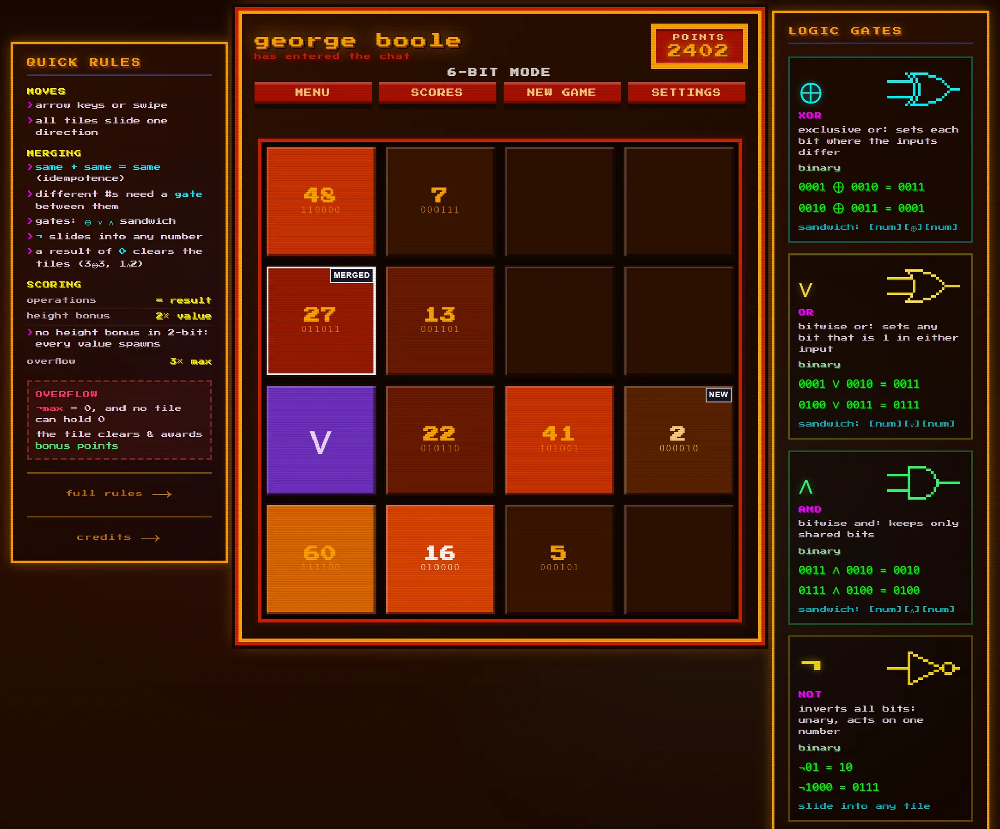
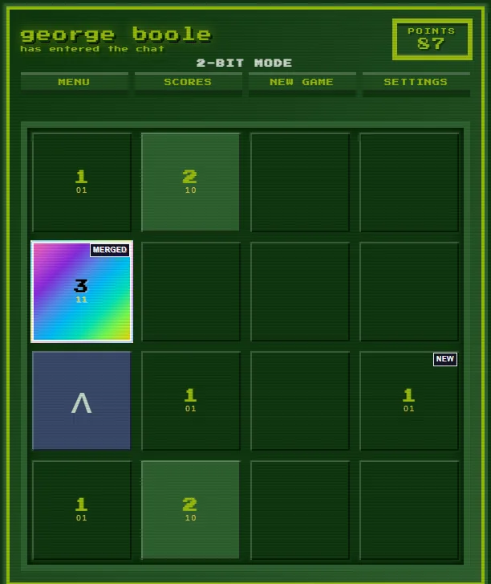
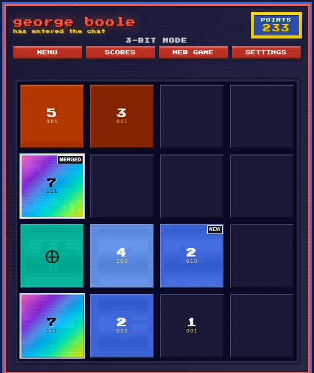
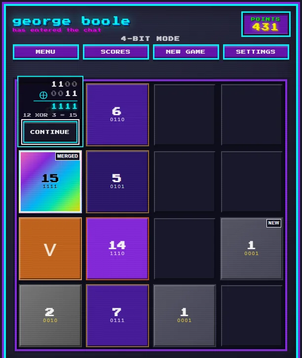
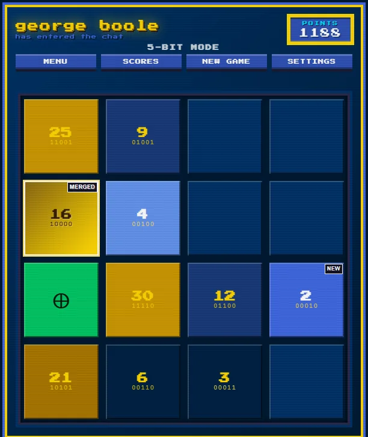
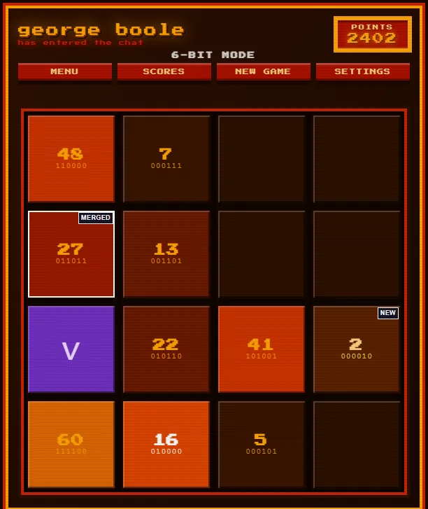
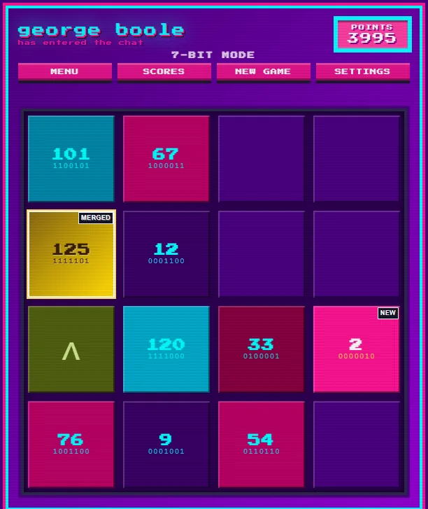
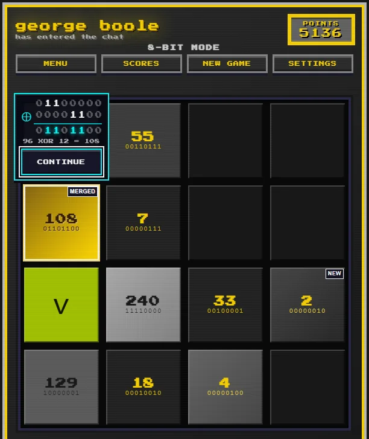
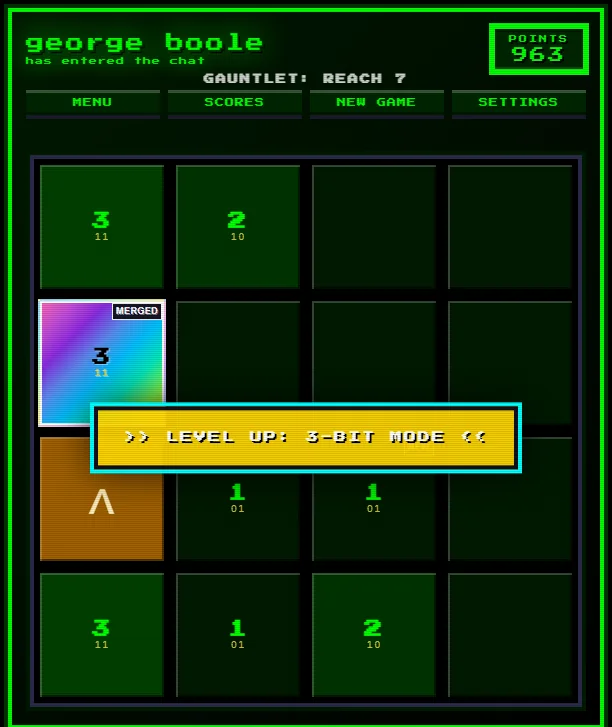

a logic-gate puzzle game inspired by 2048 & the work of George Boole
George Boole is a sliding-tile puzzle about the four logic gates that every computer is built from. Push two numbers together across an XOR tile and they combine bit by bit. Push them through OR, AND or NOT and you get something else. Points come from what the gates compute, so the way to score is to understand what they do, and you learn that by playing rather than by reading a manual.








pipx install magmacrunch-george-boolegame by magmacrunch media
music "George Boole Has Entered the Chat" by Juanito Thompson
sound effects played on a MOOG GRANDMOTHER synthesizer
original concept inspired by Gabriele Cirulli's 2048 (2014), reimagined with Boolean logic instead of addition
cheapness impact factor 2.4